いくつもの 川が流れる 水のまち
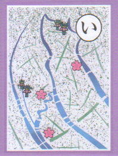
櫓がきしむ 川面のどかな 矢切の渡し
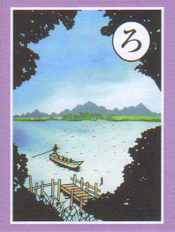
ハープ橋 ほんとになるかな ポロロンと
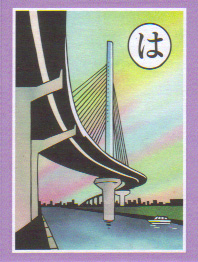
日常の 生活描く 綴り方
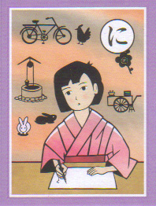
堀切の 菖蒲を描く 江戸百景
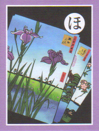
へぇ ほんと 金魚の形 葛飾区
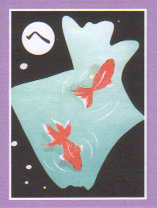
寅さんが 駅で故郷 ふりかえる
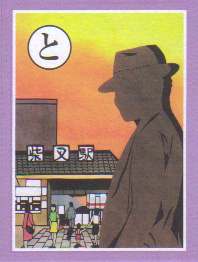
中世の 遺跡が語る 葛西城
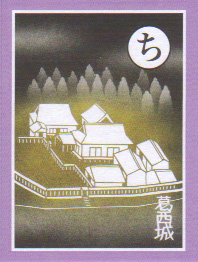
両さんを 探しに亀有 出かけよう
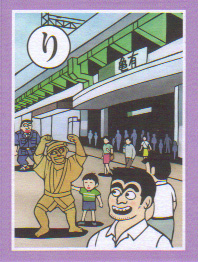
ぬくもりと 笑顔あふれる 商店街
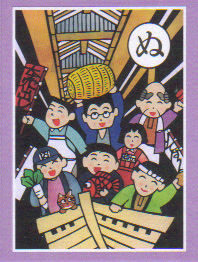
累代の 技術が染める 江戸小紋
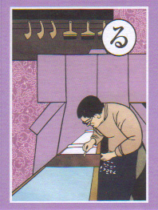
和と洋の 美が調和する 山本亭
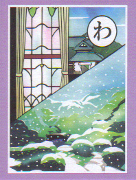
金町に くらしささえる 浄水場
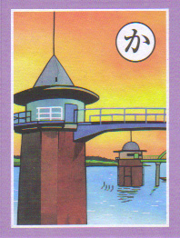
吉宗の 病治した お花さん
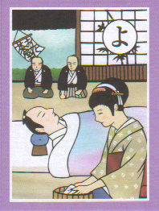
鷹狩に 将軍通った 小菅御殿
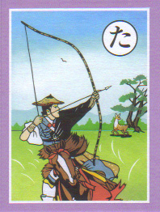
歴史から 治水を学ぶ 桜土手
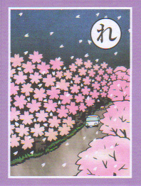
そろばんを 葛飾で流行らせた 川端仙次
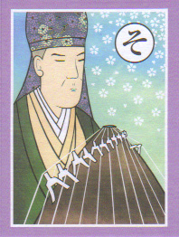
綱で曳き 旅人いきかう 曳舟川
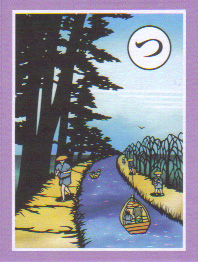
年貢米 たくわえ備え 郷倉で
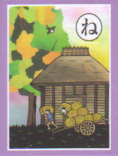
中川は 右に左に 七曲
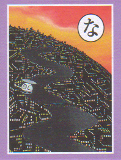
ランナーが 今日もいきかう 河川敷
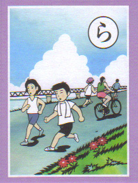
虫の声 秋草そよぐ 野草園
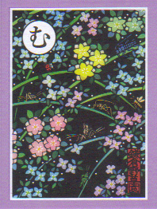
うたわれた 古代かつしか 万葉集
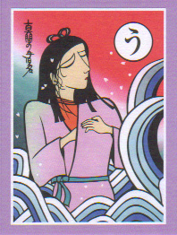
農村と 江戸を結んだ 葛西舟
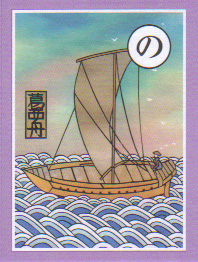
鬼塚は 歴史つたえる 玉手箱
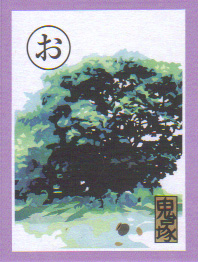
区歌うたう 光と希望 力あり
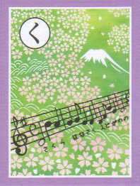
弥惣兵衛 よびよせつくる 小合溜
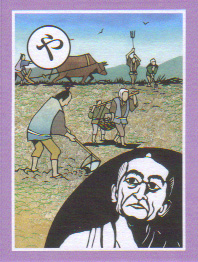
町工場 技とパワーが あふれてる
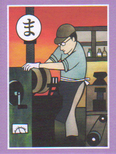
懸命に 車夫がおっぺす 人車鉄道
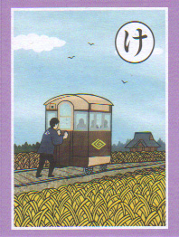
故郷と 宇宙をつなぐ 博物館
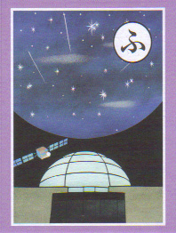
古代では 立石様が 道しるべ
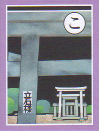
笑顔生む おもちゃ育てた セルロイド
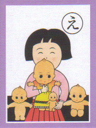
てんすけてん 葛西ばやしは 江戸囃子
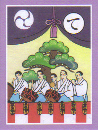
荒川は 人がつくった 放水路
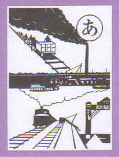
参道の にぎわい楽し 帝釈天
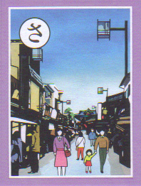
季節ごと 食卓いろどる 元気野菜
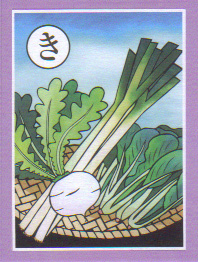
友好を ウィーンと育む モーツァルト
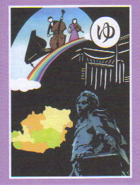
明治の美 レンガを積んだ 閘門橋
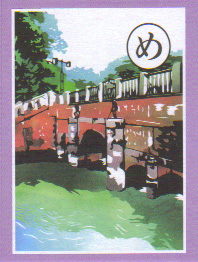
水戸街道 人馬にぎわう 新宿のまち
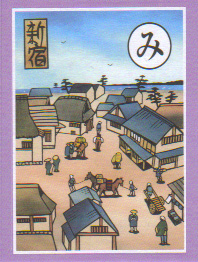
しばられて 願いかなえる 地蔵尊
非核都市 平和を祈る 千羽鶴
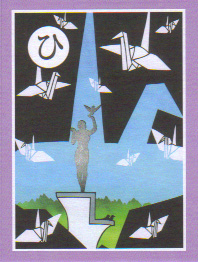
餅つきの うさぎと眺める スカイツリー
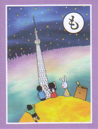
せんべいの 手焼きの姿 あちこちに
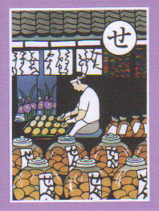
水郷の 景観残す 水元公園
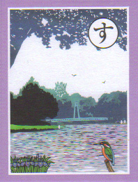